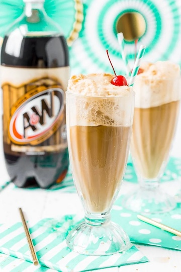

Root Beer Float

Description
Nothing beats a cold root beer float on a hot summer day. Creamy vanilla ice cream pairs perfectly with the sweet kick of A&W root beer.
Ingredients
- A&W Root Beer
- Vanilla ice cream
- Whipped cream
- Cherry (optional)
Steps
- Freeze a tall glass for 10 minutes.
- Add 2 scoops of vanilla ice cream to the chilled glass.
- Slowly pour root beer on top of the ice cream. Take time to allow the fizz to settle.
- Swirl a layer of whipped cream on top of the root beer foam. Add a cherry on top if desired.
- Go outside and enjoy!